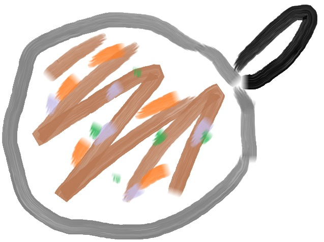

Fried-Tofu Fried-Rice

This skillet dish is quite delish.
Who says tofu isn't tasty?
A distinctive blend of sesame oil, rice-wine vinegar, chilli-flakes, and soy-sauce give this dish a deep colour and flavour.
It's very important to use leftover, or day-old rice for this dish. Freshly-cooked rice (saturated with moisture) will not absorb the flavour correctly, and does not fry correctly.
Prep time: 10 minutes
Cook time: 30 minutes
Ingredients
- 3 tbsp sesame oil
- 1 tbsp rice-wine vinegar
- 3 cups of leftover, or day-old, cooked rice
- 300g firm tofu
- 1 onion
- 1 cup chopped mushrooms
- 50g green onions, for colour
- garlic, flaked chilli (or chilli sauce), and soy sauce to taste
Directions
- Chop the tofu into small cubes or smallish rectangular slabs. I prefer the slabs to increase 'sizzle-surface area'.
- Chop the onion and heat the oil. Add rice-wine vinegar, soy sauce, chilli flakes (or chilli-sauce), and garlic. This should quickly mix together to create a rich sauce.
- Add the tofu. Sprinkle the onion on top. Let the tofu sizzle before stirring. Try to get an even brown across every piece of tofu.
- Add the mushrooms, which will re-hydrate the (by now) rapidly drying-our sauce. Stir occasionally.
- Add the rice in stages, and stir well to avoid clumping. You want to try and coat every grain with oil.
- Add chopped green onions to add colour, and serve hot.
Serves three
Home